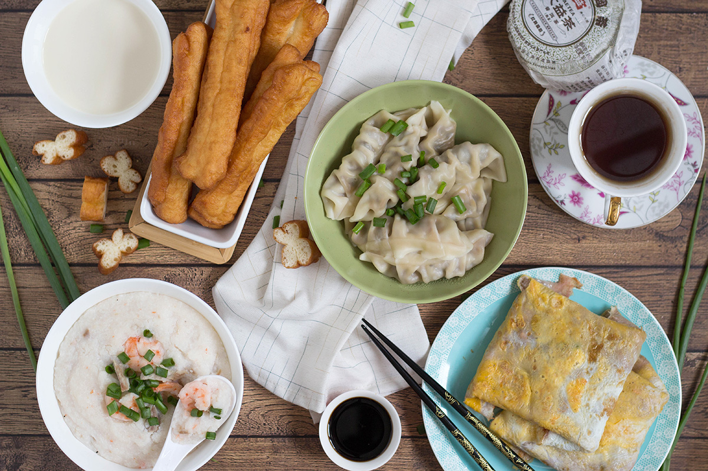

La tipica colazione cinese è di base una colazione a base di cibi caldi e salati. Nella provincia di Yunnan, vanno molto i cibi piccanti, mentre nel Guizhou sono diffusi i noodles con grasso di maiale. Nelle regioni settentrionali della Cina la colazione comprende spesso panini al vapore ripieni e vari altri snack al vapore o fritti. Una costante sono gli Zongzi, ossia riso glutinoso avvolto in bambù, o i Baozi, dei panini al vapore ripieni di carne. 
La colazione giapponese è salata e prevede nella maggioranza delle volte riso al vapore in bianco, pesce alla piastra, natto (fagioli di soia fermentati)
con sopra un uovo crudo, zuppa calda di miso e tsukemono, ovvero i sottaceti.
La tipica colazione thailandese comprende piatti a base di riso, noodle, frutta, uova, pollo e verdure. La cosa positiva è che essendoci una varietà infinita di piatti si può fare sempre una colazione diversa ogni mattina, passando da una colazione più leggera ad una sostanziosa o da una colazione salata ad una dolce.
La English Breakfast è sicuramente una delle colazioni più iconiche al mondo; uova strapazzate o al tegamino, bacon croccante, funghi, toast e salsicce grigliate sono la base della tradizionale colazione all’inglese. C’è anche chi opta per un muffin salato o il porridge.